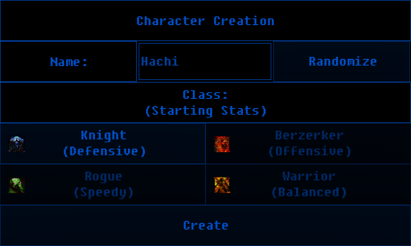
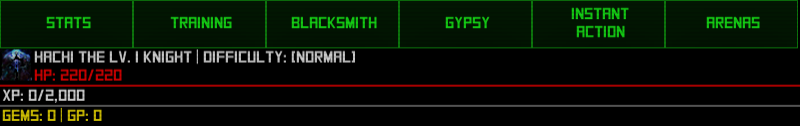
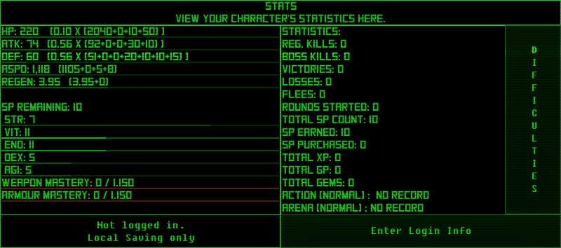
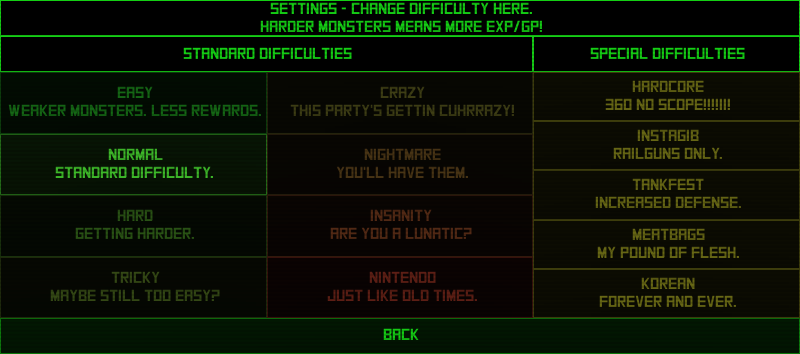
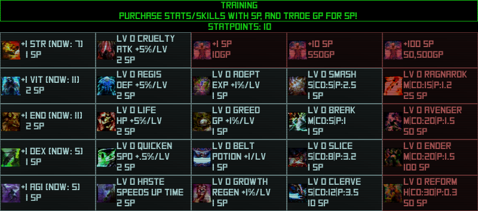
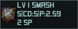
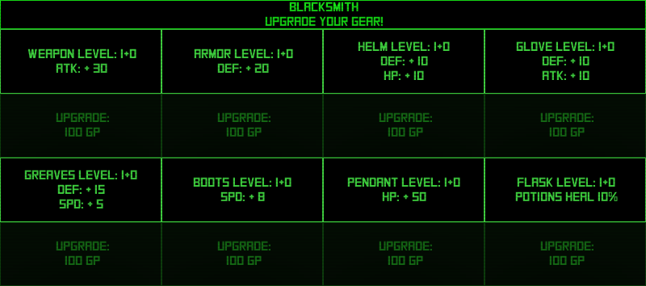
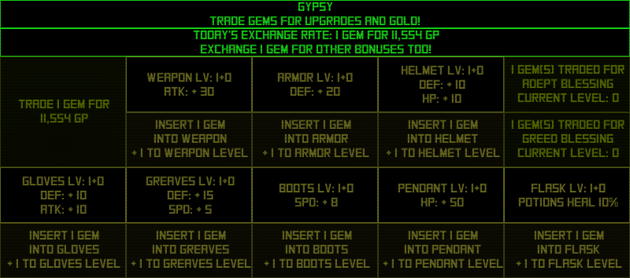
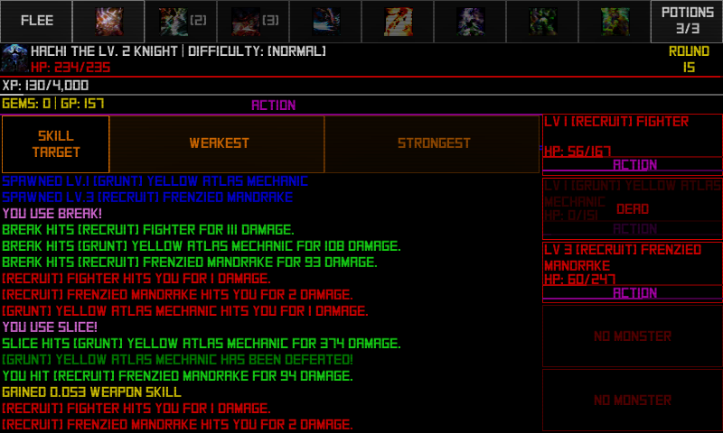
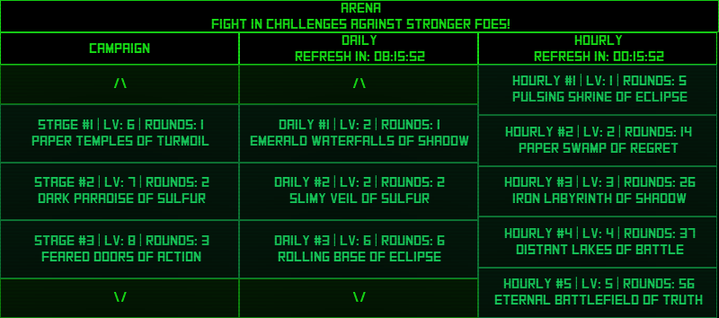

|
TapRPG Beginner's Guide
Beginner's Guide
If you are just starting out, hit 'New Game' on the title screen to create your character.
This game autosaves, so if you have any local save data, creating a new character will ovewrite it immediately.
This game can save and load to a cloud service manually, so you can have multiple characters if you so wish.
Contents
1. Character Creation
2. Navbar
3. Stats
4. Training
5. Blacksmith
6. Gypsy
7. Instant Action
8. Arena
1. Character Creation
You can enter a name, and choose from 4 classes. Classes only determine starting stats, nothing else.
The randomize button next to the name will generate a name randomly for your character.

Starting Classes:
Knight - Defensive
STR - 7
VIT - 11
END - 11
DEX - 5
AGI - 5
|
Berzerker - Offensive
STR - 11
VIT - 6
END - 6
DEX - 11
AGI - 5
|
Rouge - Fast
STR - 7
VIT - 5
END - 5
DEX - 11
AGI - 11
|
Warrior - Balanced
STR - 9
VIT - 9
END - 9
DEX - 8
AGI - 7
|
After you have made your selection, hit 'Create' to begin the game.
You will be sitting on the stats screen, where you can see the statistics of your character.
2. Navbar
Across the top of most screens is the navigation bar.
This has buttons to access the common screens where you upgrade your character or start combat.
It also tells you about your character's status.
Your character's level, class, current difficulty, health, experience, gems and GP are all visible here.

3. Stats Screen
On the stats screen, you can view your character's combat statistics, and login to the cloud to save/load from the cloud.
Along the left side, you can see your character's Combat Stats and Base Stats and Masteries.
Combat and base stats can be upgraded with GP and Gems.
Masteries can only be earned through combat
On the right hand side, there is a list of your character's statistics.
Kills, boss kills, wins, losses, flees, and total rounds played are tracked, as well as total XP/SP/GP/Gems earned.
Across the bottom, you can see if you are logged in to the cloud.
If you are logged in, you can upload your save to the cloud, or download your cloud save to your device.
If you aren't logged in, you can login with your information.
If you have not logged in, the account will be created when you log in for the first time with your desired info.
The name you use for login will be visible to other players on the leaderboards, as well as your character name.
The name you use for your login doesn't need to be the same as the name for your character.

| Stat |
Effect |
Description |
| HP |
Maximum Health Points |
The higher this is, the longer you can last in combat. You will also recover more per potion. |
| ATK |
Attack Power |
The higher this is, the more damage your character will do in combat. |
| DEF |
Defensive Power |
The higher this is, the less damage your character will take. |
| ASPD |
Attack Speed |
The higher this is, the more attacks you can do compared to enemies. |
| REGEN |
Regeneration |
The higher this is, the faster your health will regenerate in combat. |
| Stat |
Effect per 1 stat |
| STR |
+10 HP, +6 ATK, +1 DEF |
| VIT |
+15 HP, +3 DEF |
| END |
+25 HP, +1 DEF |
| DEX |
+10 ATK, +3 ASPD |
| AGI |
+18 ASPD |
Also, from the stats screen, you can change the difficulty.
You can make enemies harder or stronger, or change their stat balance
Stronger enemies are worth more XP/GP, and can drop more gems!
Be aware, gem drops are also limited by your level!
You won't see any gems dropping off of monsters until you are at least level 10.
After that, the higher level you are, the more gems you can earn in a single drop!
Pressing the button along the right side labeled 'DIFFICULIES', opens up this screen.

4. Training
On the training screen, you can purchase skills and stats with SP earned by leveling up, and purchase more SP with GP.
There are a lot of skills and stats to purchase, and each skill has some information with it.

Across the top to the right, there are buttons to purchase 1, 10, and 100 sp at once.
The price for 10 and 100 is the same as if you purchased them one at a time.
Down the left side, there are buttons to purchase upgrades to your base stats.
This is typically the best way to gain power, as the cost of stats increases slower than all the other skills.
On the next column to the right, there are buttons to purchase a bonus to your combat stats.
These bonuses stack with all other bonuses, such as bonuses from stats and gear.
On the next column, are misc. bonuses, such as increasing the EXP and GP earned from combat,
increasing the carrying capacity of your belt, and increasing your regeneration rate.
The next two columns contain skills.
Each skill has a lot of information on it's button. This information has multiple parts.
Besides the name and level of the skill, the bulk of the information is on the second line.

This skill is a Single Target skill that takes 5 rounds to cool down, and does 1.6x damage.
The first thing the panel shows is the type of skill that it is.
| Code |
Description |
| S |
Single Target Attack |
| M |
Multi Target Attack |
| H |
Healing |
The next thing is how long the cooldown of the skill is, in rounds.
When you use a skill, it goes on cooldown, and can't be used again for a number of rounds.
CD:5 means that skill takes 5 rounds to cool down.
The last bit of information is the power of the skill. Upgrading the skill increases this rating
For Single and Multi target attacks, this is what your damage is multiplied by when you use the skill.
For healing skills, this value is how much of your max health it will heal for.
5. Blacksmith
At the blacksmith, you can upgrade your gear with GP.
There are many pieces of gear to upgrade.
Your level also affects the bonuses from gear.
Simply tap one of the buttons to upgrade the item.

| Item |
Effect |
| Weapon |
Increases ATK by 30 x (.9 + level/10) per upgrade level |
| Armor |
Increases DEF by 20 x (.9 + level/10) per upgrade level |
| Helmet |
Increases HP and DEF by 10 x (.9 + level/10) per upgrade level |
| Gloves |
Increases ATK and DEF by 10 x (.9 + level/10) per upgrade level |
| Greaves |
Increases DEF by 15 x (.9 + level/10) per upgrade level and ASPD by 5 x (.9 + level/10) per upgrade level |
| Boots |
Increases ASPD by 12.5 x (.9 + level/10) per upgrade level |
| Pendant |
Increases HP by 50 x (.9 + level/10) per upgrade level |
| Flasks |
Increases recovery of potions by .5% per upgrade level |
6. Gypsy
At the gypsy, you can trade gems for GP, enchantments to your gear, or a slight boost to gained XP/GP from combat.
The exchange rate varies slightly every day, and slightly increases with your level.

7. Instant Action
Instant action enters you into an endless combat with monsters that are around your level.
Monsters will increase in strength every round, and the further you go, the more that will spawn per round.
Instant action is a good way to gain power if you can't clear an arena.
You may not earn as much GP per round, with monster level being reduced, but it may help you get stronger to be able to clear out an arena you are having trouble with.
You also have a chance to earn gems, as bosses can still spawn (rarely!)
Controls:
Simply tap an enemy to attack them.. Hold down to continue attacking.
Tap an option across the top to execute that action.
Tap Strongest/Weakest to change the skill target to target the monster with the Most/Least health remaining.
Across the top, the Navbar changes to the combat Hotbar. Here, you can select options during battle.
Flee will return you to the stats page, leaving the round and forfeit all earned XP and GP for that round.
Potion will allow you to heal for a small amount of health based on the level of your flask.
The other buttons will allow you to use your skills, if you have at least one level of that skill purchased, and it is not on cooldown
Starting a new combat will fill your potions up all the way, and will cooldown all skills.

Monsters have a rank that is randomized slightly.
The more rounds you go, the higher chance of fighting stronger monsters.
A higher rank means that monster is stronger.
Monster Ranks:
1. Grunt
2. Recruit
3. Novice
4. Veteran
5. Elite
6. Leader
7. Alpha
8. Omega
9. Zen
There are also boss monsters, which spawn randomly during instant action, and at the end of every arena fight.
8. Arena
The arena is where you can fight challenges for larger rewards
Campaign challenges you can retry after victory for extra resources.
There are also daily and hourly challenges that can be completed once, but refresh themselves every so often.
If an arena is green, it has not been completed yet.
If an arena is yellow, it has already been completed, and has cooled down.
If an arena is red, it has been completed and is currently on cool down.

|